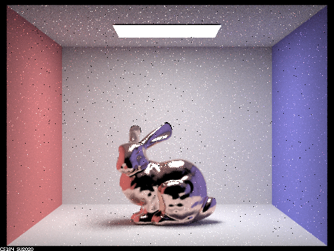

|
In the max ray depth = 0, we dont see any other light bouncing, thus we only observe the light at the top. In max ray depth = 1, we now see the two spheres, but we havent seen the light that bounces off the sphere because it is still one bounce so they remain black in this ray depth. In max ray depth = 2, we now see the left sphere reflect the nearby objects due to two bounce, including the black sphere on the right and its environment. Then in max ray depth = 3, we see the right sphere refract light (not reflect) and see the environment in a refracted matter. Only when we hit 4 bounces, can we start to see the refraction of light through our spheres. In max ray depth = 4, we see the right sphere have a clearer and brighter refraction of light and that the left sphere reflects the blue wall refracted in the right sphere. We also notice the light refraction mark on the blue wall. In max ray depth = 5 and 100, we observe minimal changes from max ray depth = 4. Further light bounce enhances the clarity of the image, but once there were 5 bounces, there were minimal differences from more light bounce.
|
|
As we increase the alpha value from 0.005 to 0.5, we observe the dragon becomes less reflective as well as less noise. In the first image where the alpha = 0.005, we observe that there are a lot of black dots spread throughout the image. When we raise the alpha to 0.05, we still see the black dots, but much less and then we see the dragon be slightly less reflective. When we set the alpha to 0.25, the black dot is almost gone, but now you barely see any reflection on the surface of the dragon. Finally, for alpha = 0.5, there are no visible black dots on the image and the dragon is almost entirely trying to diffuse light rather than reflecting.
|  |
We observe that the cosine hemisphere sampling has much more noise, particularly the surface of the bunny compared to the importance sampling where there is much less noise and the surface of the bunny is much more reflective and translucent. The cosine hemisphere sampling makes the surface of the bunny fuzzy and much darker, resulting in a less comprehensible image.
The conductive material that we used in this image is Ag (silver).
Web PageLink is : https://cal-cs184-student.github.io/sp22-project-webpages-jimkang126/